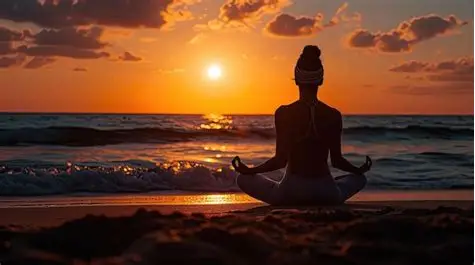

Yoga Integral y Vinyasa
Un espacio para conectar con tu cuerpo, ganar flexibilidad y mover la energía a través de la respiración consciente y el movimiento fluido.
"Animarte a dar el primer paso en el mundo del Yoga es mucho más que aprender posturas; es regalarte una pausa para cambiar el enfoque con el que miras tu día a día. Cuando te sumerges en la respiración conciente y la escucha interna, la vida se empieza a mover desde otro lugar: con más calma, presencia y equilibrio.

Un espacio para conectar con tu cuerpo, ganar flexibilidad y mover la energía a través de la respiración consciente y el movimiento fluido.
Sumérgete en una experiencia de profunda relajación guiada por las vibraciones de los cuencos tibetanos y mantras que armonizan tu mente.
Jornadas especiales diseñadas para frenar la rutina, respirar al aire libre y compartir la práctica en un entorno de calma y bienestar.
Acompañamiento adaptado a tus necesidades para que puedas integrar posturas, estiramientos y técnicas de respiración en tu día a día.
Un espacio para conectar con tu cuerpo, ganar flexibilidad y mover la energía a través de la respiración consciente y el movimiento fluido.
Sumérgete en una experiencia de profunda relajación guiada por las vibraciones de los cuencos tibetanos y mantras que armonizan tu mente.
Jornadas especiales diseñadas para frenar la rutina, respirar al aire libre y compartir la práctica en un entorno de calma y bienestar.
Acompañamiento adaptado a tus necesidades para que puedas integrar posturas, estiramientos y técnicas de respiración en tu día a día.
Mejora la postura y aporta estabilidad mental.
Estira todo el cuerpo y alivia el estrés.
Aumenta la fuerza y la concentración.
Mejora el equilibrio físico y mental.
Ideal para descansar y relajar la espalda.
Flexibiliza la columna y abre el pecho.
Relajación total y integración profunda.
Aquí puedes integrar tus videos (con la etiqueta <video>) o galerías de imágenes (<img>).